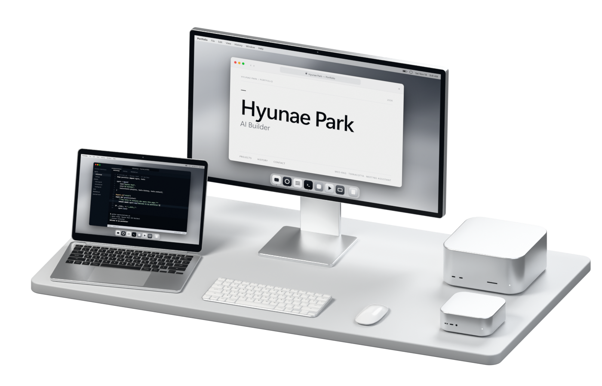
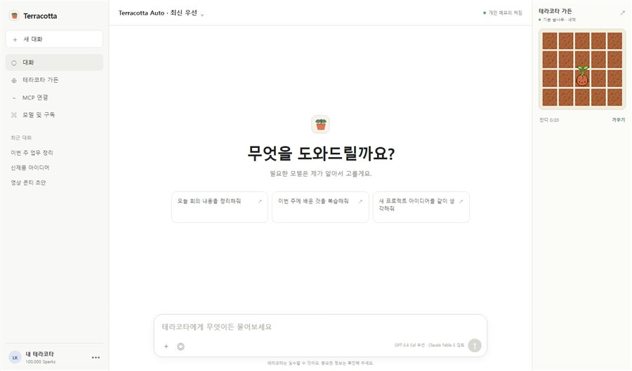
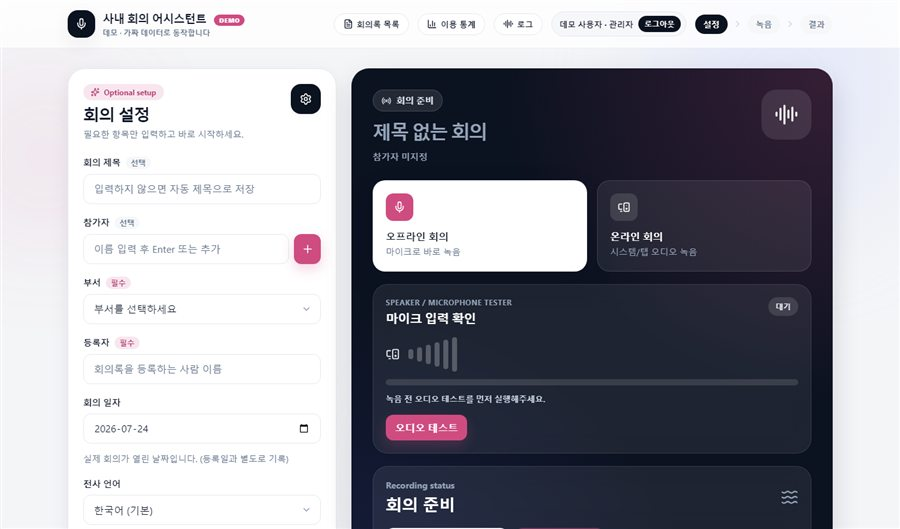
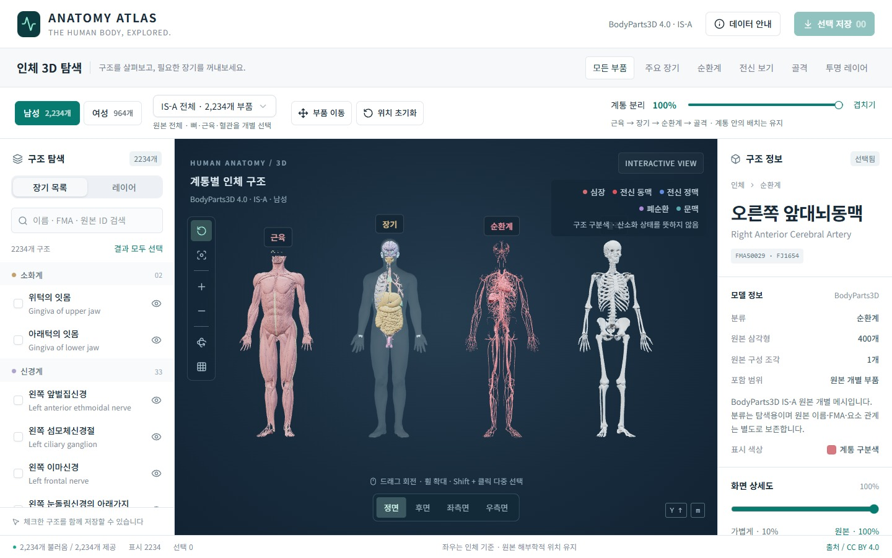

진료 보조 RAG. 답변 옆에서 검색 근거를 확인합니다.사용 중
진료 보조 RAG. 답변 옆에서 검색 근거를 확인합니다.사용 중Hyunae Park · AI Builder · Portfolio 2026
아이디어를 돌아가는 AI 서비스로 만듭니다.
- AIRAG · QLoRA · MCP · Claude API · faster-whisper
- WebTypeScript · React / Next.js · Three.js
- InfraPython · Docker · Cloudflare Workers · Vertex AI

드래그해서 회전
Projects
05 PROJECTS · 2025—2026
진료 보조 RAG. 답변 옆에서 검색 근거를 확인합니다.사용 중
대화, 모델 선택, 개인 가든이 있는 AI 작업실.공개 코드
녹음부터 회의록까지 이어지는 사내 회의 어시스턴트.사내 운영
계통별로 분리해 보는 한국어 3D 해부학 탐색기.라이브전체 흐름
- 2025.10–MED-RAG진료 보조 RAG. 답변 옆에서 검색 근거를 확인합니다.
- 2026.06–
Meeting Assistant녹음부터 회의록까지 이어지는 사내 회의 어시스턴트. - 2026.07–
Terracotta대화, 모델 선택, 개인 가든이 있는 AI 작업실. - 2026.09
MED-RAG Serving Lab
LLM 변경을 검사하고 배포 후보를 준비하는 MLOps 실험. - 2026.09
RoboSkill Lab
말로 지시한 블록 밀기를 MuJoCo 물리 접촉으로 실행합니다. - 2026.09
Anatomy Atlas계통별로 분리해 보는 한국어 3D 해부학 탐색기.